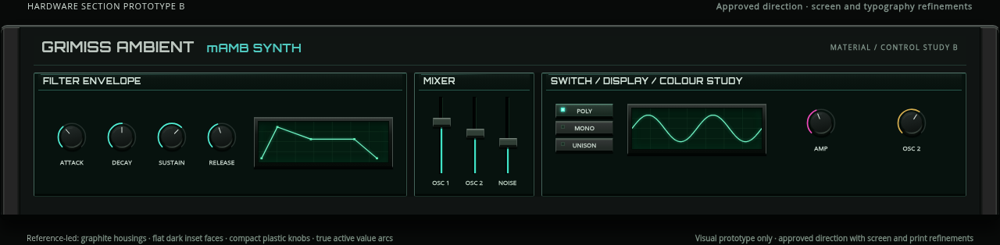
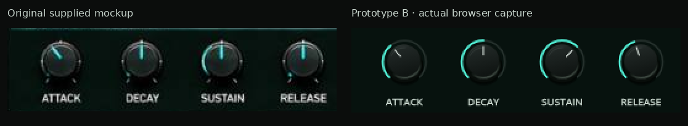

Hardware Section Prototype B — approved refinements
Prototype A was rejected. This is an isolated replacement study, not a rollout to the synthesizer. The existing synth, audio engine, MIDI and parameter bindings remain unchanged. Prototype B was approved with brighter screens, visible bezels and heavier screen-printed lettering throughout. Those refinements are shown here; the component design is now used in the full instrument.
Actual browser capture

Compact, relatively flat black knob tops and shallow sidewalls replace the smooth domed/disc treatment. A dark inactive arc and a bright value-driven active arc are separate elements. Teal, magenta and amber remain distinct. Flat graphite end housings replace tubular rails; green is limited to dark display glass, subtle panel undertones and controlled edge lighting.
Direct reference sampling
These are per-channel medians of rectangles from the supplied1280×640JPEG, with coordinates retained for audit. Surfaces and illuminated areas were sampled separately. The face sample is near black with a slight green undertone; the cheek face is neutral graphite. Cabinet paint is a restrained near-neutral charcoal, with no broad green gradient. JPEG lighting is not treated as a uniform material colour. The original mAMB accent colours are retained for live value indicators.
| Reference region | Sample median | Source rectangle [left, top, right, bottom] |
|---|
| chassis dark | #030d09 | [1150, 479, 1195, 484] |
| panel face | #07120e | [1104, 187, 1225, 203] |
| panel recess | #030a08 | [792, 281, 803, 287] |
| screen glass | #06240f | [941, 143, 1003, 150] |
| cheek front | #252525 | [12, 242, 22, 400] |
| button face | #323635 | [102, 139, 125, 149] |
| knob top | #172c2a | [657, 256, 664, 266] |
| teal highlight | #0a362c | [622, 146, 632, 180] |
Sampling data and original-image SHA256 · Browser verification
Matched-scale reference comparison
Left: unchanged crops from the original supplied mockup. Right: crops from the actual browser screenshot. Both sides use the same2×pixel enlargement, with no independent fitting, stretching, colour adjustment or retouching. Open a comparison PNG for its full pixel dimensions. On a narrow screen the complete pair scales together.
Knob proportions, pointers and actual value arcs

Chromium checks passed for arc positions at0/25/50/100%, mouse dragging and display response, compact cap movement, switch LED selection, preserved accent colours and in-panel controls. This visual prototype contains no audio engine. The prototype remains isolated from audio/MIDI; the approved component design is now used in the full interface. Approved component direction, updated with the requested screen glow, bezels and heavier screen-printed lettering throughout.